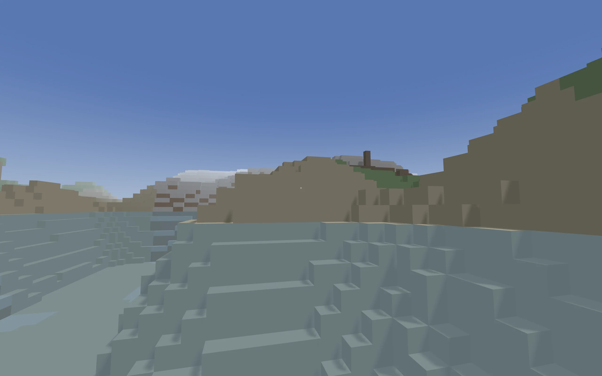

Walk through a procedurally generated world and everything you hear is composed in real time based on where you are. Step into a forest and a pentatonic lead voice picks up over warm pad chords. Cross into a desert and the scale shifts to Phrygian dominant, the tempo quickens, and the percussion thins to rim clicks and shakers. Wade into the ocean and everything slows down, the reverb opens up, and the bass drops out. The music isn't a soundtrack. It's a function of the terrain.
The world is built from simplex noise layered at three octaves. Temperature and moisture noise fields carve the terrain into seven biomes: ocean, plains, forest, desert, swamp, mountains, and tundra. Trees grow in forests and swamps, stone outcrops appear in mountains, and sand covers the desert floor. The chunks load in a ring around the player, building and tearing down geometry as you move. It looks like a voxel game, but the point isn't the world. The world is the instrument.
Seven voices
The music engine runs seven independent synthesizer voices, each with its own scheduling logic and parameter sensitivity. A lead generates melodic phrases of three to six notes, choosing from the current biome's scale with a bias toward the player's look direction: look up and the melody trends higher; look down and it drops. A pad plays slow chord progressions using FM synthesis, cycling through triads, sevenths, suspended, and add9 voicings. A bass walks between root and fifth with a filter envelope, sparse in cold biomes and driving in warm ones. Percussion synthesizes eight drum sounds from scratch (no samples) and layers them into biome-specific patterns. An ambient voice mixes brown and pink noise through bandpass filters, adding shimmer near water and rumble underground. An arpeggiator runs note patterns whose rate and filter shape vary by biome. And a ping voice triggers a harmonic tone with long reverb when you click, the only sound the player controls directly.
All seven voices are built with Tone.js and scheduled on its transport at eighth-note resolution. Each voice manages its own timing and note selection. The engine doesn't sequence pre-composed bars. It makes decisions every beat.
Biome profiles
Each biome defines a complete musical profile: a scale (pentatonic for plains, Dorian for forest, Phrygian dominant for desert, Aeolian for tundra), a tempo range, voice-level gain and filter targets, and reverb and delay parameters. When the player crosses a biome boundary, these targets don't snap to new values. A parameter smoother applies exponential dampening with a four-second time constant, so everything crossfades. If you're standing at the edge of a forest and a desert, you hear both profiles blended by distance.
The blending works by sampling biomes on an 8-by-8 grid centered on the player, weighting each sample by distance falloff. The result is a set of biome weights that sum to one, and the music parameters are a weighted mix. This means the transitions are spatial, not temporal. You hear the gradient as you walk through it.
Rhythm patterns
The percussion voice doesn't use generic rock or electronic beats. Its pattern library draws from Son Clave, Habanera, Agbadza, Bembe, and other African and Latin rhythmic traditions, fourteen patterns in total. Each biome favors certain patterns over others. The desert leans on Habanera and Son Clave. The swamp pulls from Agbadza and Gahu. Mountains are sparse, favoring simple patterns with wide spacing. The patterns are probabilistic: at each step, the voice rolls against the pattern's probability for that slot and decides whether to trigger a hit. This keeps the rhythm recognizable but never exactly the same twice.
Timing and velocity are humanized. Hits land within a few milliseconds of the grid and velocities vary around a center, so the percussion has a loose, played feel rather than a rigid machine quality.
Day and night
A ten-minute day/night cycle drives a second layer of musical change. The sky shifts from blue to orange to deep purple and back, the directional light dims, and the fog color follows. At night, the music engine increases reverb decay by 50%, darkens filter cutoffs, and reduces the volume of brighter voices. The lead pulls back. The pad gets more atmospheric. The ambient voice fills in the space. Walking through a forest at night sounds different from the same forest at noon, even though the biome profile is identical.
Sections
The engine cycles through four musical sections: ambient, building, full, and breakdown. Each section adjusts which voices are active and at what volume. The ambient section is sparse, with just pad and ambient noise. Building fades in the lead and arp. Full brings everything in, including bass and percussion. Breakdown strips back down. The section transitions ramp voice gains over two seconds, avoiding hard cuts. The overall effect is that the music breathes even when you stand still. Walking through different biomes creates spatial variation; the section cycle creates temporal variation.
World generation
The terrain uses three simplex noise layers at scales of 0.005, 0.015, and 0.04, combined with weights of 0.6, 0.25, and 0.15. Separate noise fields at different frequencies determine temperature and moisture, which together select the biome. Height transitions between biomes use Hermite smoothstep interpolation to avoid hard edges. Trees are placed with a noise-gated probability check so forests have natural-looking density variation rather than uniform coverage.
The rendering uses Three.js with per-face culling: only block faces adjacent to air or water are drawn, significantly reducing the triangle count. Chunks are 16 by 16 blocks and 256 blocks tall, loaded in a circular radius of six chunks around the player, with a budget of four new chunks per frame to keep load times from spiking.
Controls
WASD to move, mouse to look, space to jump or swim up, shift to sprint. Click to trigger a ping. That's it. There's no objective, no inventory, no enemies. You walk through a world and the world plays music for you. The ping is the one moment of agency in the soundscape: a harmonic tone that rings out over whatever the engine is doing, a way to leave a brief mark on the generative output before it moves on without you.